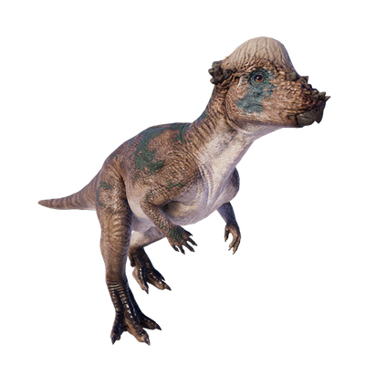

Useful Website
Pachycephalosaurus is an herbivorous dinosaur that lived in North America during the Late Cretaceous period. The name Pachycephalosaurus translates to ‘thick-headed lizard’, in reference to the genus’ large, thick skull that experts believe was used in intra-species combat, with rival dinosaurs attacking each other when competing for territory. Growing up to 4.5m in length and weighing almost half a tonne, Pachycephalosaurus is one of the largest pachycephalosaurid dinosaurs.
